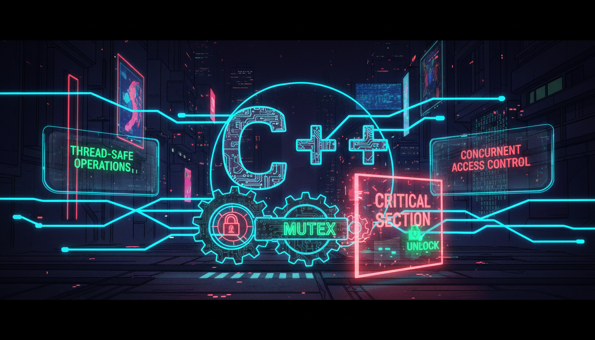

mutex, lock_guard, unique_lock, condition_variable

Mutex (mutual exclusion) запобігає одночасному доступу до спільних ресурсів.
#include <iostream>
#include <thread>
#include <mutex>
#include <vector>
std::mutex mtx;
int counter = 0;
void increment() {
for (int i = 0; i < 100000; i++) {
std::lock_guard<std::mutex> lock(mtx); // RAII блокування
counter++;
} // Автоматичне розблокування
}
int main() {
std::vector<std::thread> threads;
for (int i = 0; i < 5; i++) {
threads.emplace_back(increment);
}
for (auto& t : threads) {
t.join();
}
std::cout << "Counter: " << counter << std::endl; // 500000
return 0;
}